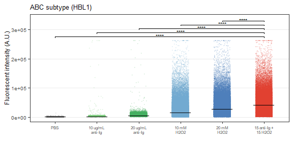
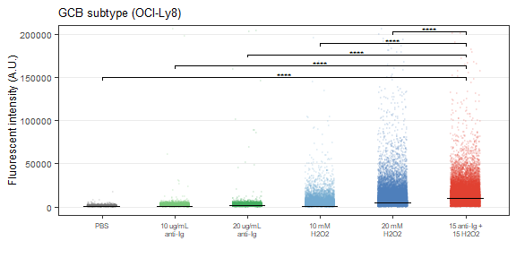
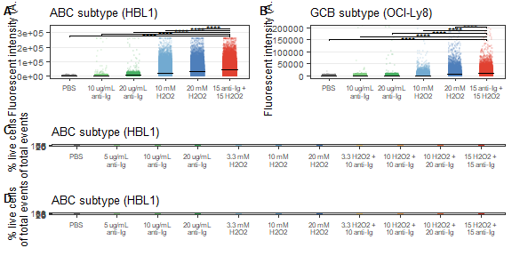

DLBCL proteins chapter supplementary figures
mwitmond
2024-10-22
Last updated: 2025-02-12
Checks: 7 0
Knit directory: chapters_DLBCL/
This reproducible R Markdown analysis was created with workflowr (version 1.7.1). The Checks tab describes the reproducibility checks that were applied when the results were created. The Past versions tab lists the development history.
Great! Since the R Markdown file has been committed to the Git repository, you know the exact version of the code that produced these results.
Great job! The global environment was empty. Objects defined in the global environment can affect the analysis in your R Markdown file in unknown ways. For reproduciblity it’s best to always run the code in an empty environment.
The command set.seed(20241022) was run prior to running
the code in the R Markdown file. Setting a seed ensures that any results
that rely on randomness, e.g. subsampling or permutations, are
reproducible.
Great job! Recording the operating system, R version, and package versions is critical for reproducibility.
Nice! There were no cached chunks for this analysis, so you can be confident that you successfully produced the results during this run.
Great job! Using relative paths to the files within your workflowr project makes it easier to run your code on other machines.
Great! You are using Git for version control. Tracking code development and connecting the code version to the results is critical for reproducibility.
The results in this page were generated with repository version 1ffbd94. See the Past versions tab to see a history of the changes made to the R Markdown and HTML files.
Note that you need to be careful to ensure that all relevant files for
the analysis have been committed to Git prior to generating the results
(you can use wflow_publish or
wflow_git_commit). workflowr only checks the R Markdown
file, but you know if there are other scripts or data files that it
depends on. Below is the status of the Git repository when the results
were generated:
Ignored files:
Ignored: .Rhistory
Ignored: .Rproj.user/
Ignored: analysis/figure/
Untracked files:
Untracked: code/packages_FACS.R
Untracked: code/packages_seq.R
Untracked: data/AL006_InhibCombiTest/
Untracked: data/DS102_StimTest/
Untracked: data/DS103_ViabilityTest/
Untracked: data/DS104_StimInhibTest/
Untracked: data/DS108_StimInhibIDseq/
Untracked: data/DS113_InhibCombiIDseq/
Untracked: output/DS102_StimTest/
Untracked: output/DS103_ViabilityTest/
Untracked: output/DS104_StimInhibTest/
Untracked: output/DS108_StimInhibIDseq/
Untracked: output/DS113_InhibCombiIDseq/
Untracked: output/figures/
Untracked: output/network_visual_DLBCL/
Untracked: output/network_visual_paper/
Unstaged changes:
Deleted: analysis/about.Rmd
Note that any generated files, e.g. HTML, png, CSS, etc., are not included in this status report because it is ok for generated content to have uncommitted changes.
These are the previous versions of the repository in which changes were
made to the R Markdown (analysis/u_proteins_suppl.Rmd) and
HTML (docs/u_proteins_suppl.html) files. If you’ve
configured a remote Git repository (see ?wflow_git_remote),
click on the hyperlinks in the table below to view the files as they
were in that past version.
| File | Version | Author | Date | Message |
|---|---|---|---|---|
| Rmd | 1ffbd94 | mwitmond | 2025-02-12 | Revised chapter figs |
| html | 4492de7 | mwitmond | 2024-10-22 | Build site. |
| Rmd | 6559698 | mwitmond | 2024-10-22 | Paper figs + analysis files for ch figs |
Set-up
row_order = c("A", "B", "C", "D", "E", "F", "G", "H")
col_order = c("1", "2", "3", "4", "5", "6", "7", "8", "9", "10", "11", "12")
panel_labels <- c("a", "b", "c","d", "e", "f", "g", "h", "i", "j", "k", "l", "m")
PANEL_labels <- c("A", "B", "C","D", "E", "F", "G", "H", "I", "J", "K", "L", "M")
textsize <- theme(axis.text.x = element_text(colour = "grey", size = 11), #, face = "bold"
axis.text.y = element_text(colour = "grey", size = 11),
axis.title = element_text(colour = "black", size = 12),
legend.title = element_text(colour = "black", size = 12),
# legend.title = element_blank(),
legend.text = element_text(colour = "grey", size = 11),
strip.text.x = element_text(colour = "black", size = 12)
)
textsize_small <- theme(text = element_text(size = 9, family = "sans", colour = "black"),
plot.title = element_text(size = 10)
)colors_nord <- c("#2e3440", "#3b4252", "#434c5e", "#4c566a",
"#d8dee9", "#e5e9f0", "#eceff4",
"#8fbcbb", "#88c0d0", "#81a1c1", "#5e81ac",
"#bf616a", "#d08770", "#ebcb8b", "#a3be8c", "#b48ead")
colors_toll_bright <- c("#4477AA", "#66CCEE", "#228833", "#CCBB44", "#EE6677", "#AA3377", "#BBBBBB")
colors_toll_mute <- c("#332288", "#88CCEE", "#44AA99", "#117733", "#999933", "#DDCC77", "#CC6677", "#882255", "#AA4499", "#DDDDDD")
colors_toll_br <- c("#364B9A", "#4A7BB7", "#6EA6CD", "#98CAE1", "#C2E4EF", "#EAECCC", "#FEDA8B", "#FDB366", "#F67A4B", "#DD3D2D", "#A50026")
colors_blue9 <- c("#f7fbff", "#deebf7", "#c6dbef", "#9ecae1", "#6baed6", "#4292c6", "#2171b5", "#08519c", "#08306b")
colors_green9 <- c("#f7fcf5", "#e5f5e0", "#c7e9c0", "#a1d99b", "#74c476", "#41ab5d", "#238b45", "#006d2c", "#00441b")
colors_purple9 <- c("#fcfbfd", "#efedf5", "#dadaeb", "#bcbddc", "#9e9ac8", "#807dba", "#6a51a3", "#54278f", "#3f007d")
colors_red9 <- c("#fff5f0", "#fee0d2", "#fcbba1", "#fc9272", "#fb6a4a", "#ef3b2c", "#cb181d", "#a50f15", "#67000d")
colors_orange9 <- c("#fff5eb", "#fee6ce", "#fdd0a2", "#fdae6b", "#fd8d3c", "#f16913", "#d94801", "#a63603", "#7f2704")
colors_grey9 <- c("#ffffff", "#f0f0f0", "#d9d9d9", "#bdbdbd", "#969696", "#737373", "#525252", "#252525", "#000000")
colors_yb9 <- c("#ffffd9", "#edf8b1", "#c7e9b4", "#7fcdbb", "#41b6c4", "#1d91c0", "#225ea8", "#253494", "#081d58")
colors_pr9 <- c("#f7f4f9", "#e7e1ef", "#d4b9da", "#c994c7", "#df65b0", "#e7298a", "#ce1256", "#980043", "#67001f")
# Variable-specific colors
colors_cell <- c("HBL1" = "#AA4499", "OCI-Ly8" = "#332288",
"ABC subtype" = "#AA4499", "GCB subtype" = "#332288")
colors_stim <- c("PBS" = "#737373", "aIg+H2O2" = "#FDB366",
"Basal" = "#737373", "Activated" = "#FDB366")
colors_cell_stim <- c("HBL1 - PBS" = "#c994c7", "HBL1 - aIg+H2O2" = "#AA4499", "OCI-Ly8 - PBS" = "#88CCEE", "OCI-Ly8 - aIg+H2O2" = "#332288")
# colors_inhib <- c("iSYK" = "#228833", "iBTK" = "#4477AA", "iNFkB" = "#AA3377")
colors_inhib <- c("iSYK" = "#9dce5c", "iBTK" = "#5c9dce", "iNFkB" = "#ce5c9d")
colors_conc <- c("#737373", "#dadaeb", "#9e9ac8", "#6a51a3", "#3f007d")
colors_iSYK <- colors_green9[c(3, 5, 6, 8, 9)]
colors_iBTK <- colors_blue9[c(3, 5, 6, 8, 9)]
colors_iNFkB <- colors_pr9[c(3, 5, 6, 8, 9)]
colors_conc_stim <- colors_orange9[c(2, 3, 5, 6, 8, 9)]
colors_conc_PBS <- colors_grey9[c(2, 3, 5, 6, 8, 9)]Suppl. Figure S1
Detailed schematic of the B-cell signaling network, with proteins measured in ID-seq panel indicated.
Input:
- Cytoscape blank network
Panels
Panel A
# Placeholder
figS1_panelA <- ggplot() +
geom_blank() +
scale_x_continuous(limits = c(0, 10)) +
scale_y_continuous(limits = c(0, 10)) +
# labs(title = "BCR signaling network") +
theme_bw() +
theme(axis.text = element_text(color = "white"),
axis.ticks = element_blank(),
panel.grid = element_blank()) +
textsize_small
# figS1_panelA
# PNG
figS1_panelA <- magick::image_read("output/figures/non_R_figs/Cytoscape_BCR_network_organised.png") %>%
magick::image_border(color = "black", geometry = "1x1") %>%
magick::image_ggplot(interpolate = TRUE)
figS1_panelA
# Legend
figS1_legend <- magick::image_read("output/figures/non_R_figs/legend_network_projections_blank.png") %>%
# magick::image_border(color = "black", geometry = "1x1") %>%
magick::image_ggplot(interpolate = TRUE)
# figS1_legendCombined fig
# Combine all panels of the figure
figS1 <- plot_grid(figS1_panelA, figS1_legend, ncol = 1, rel_heights = c(8, 1), label_size = 10)
figS1# Save figure as pdf, jpg
ggsave(
figS1,
filename = "output/figures/DLBCL_proteins/suppl_figS1.pdf",
width = 6,
height = 6.5,
units = "in",
dpi = 300
)
ggsave(
figS1,
filename = "output/figures/DLBCL_proteins/suppl_figS1.jpg",
width = 6,
height = 6.5,
units = "in",
dpi = 300
)Detailed schematic of the B-cell signaling network, with proteins measured in ID-seq panel indicated.
# Remove unnecessary files to clear up memory
rm(list = ls(pattern = "figS1"))
rm(list = ls(pattern = "png"))
rm(list = ls(pattern = "results_"))
rm(list = ls(pattern = "volc_"))
rm(list = ls(pattern = "list_"))
rm(list = ls(pattern = "names_"))
rm(list = ls(pattern = "titles_"))
rm(list = ls(pattern = "data_"))
rm(list = ls(pattern = "heat_"))
rm(list = ls(pattern = "rld"))
rm(list = ls(pattern = "pca"))
gc() used (Mb) gc trigger (Mb) max used (Mb)
Ncells 10598733 566.1 17064672 911.4 12885455 688.2
Vcells 19434496 148.3 33081922 252.4 27328500 208.5Suppl. Figure S2
Increased activation upon treatment with both anti-Ig and H2O2 combined compared to treatment with anti-Ig or H2O2 alone.
Input:
- DS102 phosphoflow data
Data
figS2_data <- read_csv("output/DS102_StimTest/flow_ann/flow_data_DS102.csv")
figS2_medians <- read_csv("output/DS102_StimTest/flow_ann/flow_medians_DS102.csv")figS2_proteins <- c("pSYK (Y525/Y526)") # "pPLCy2 (Y759)"
figS2_stim <- c("aIg", "H2O2", "H2O2 + aIg")
figS2_stim <- c("Anti-Ig", "H2O2", "Combination\nAnti-Ig + H2O2")
figS2_conc <- c("PBS",
"10 ug/mL aIg", "20 ug/mL aIg",
"10 mM H2O2", "20 mM H2O2",
"15 H2O2 + 15 aIg")
figS2_conc_label <- c("PBS",
"10 ug/mL\nanti-Ig", "20 ug/mL\nanti-Ig",
"10 mM\nH2O2", "20 mM\nH2O2",
"15 anti-Ig +\n15 H2O2")
figS2_colors <- c("PBS" = "#737373",
"10 ug/mL aIg" = "#a1d99b", "20 ug/mL aIg" = "#74c476",
"10 mM H2O2" = "#98CAE1", "20 mM H2O2" = "#6EA6CD",
"15 H2O2 + 15 aIg" = "#FDB366")Panels
Panel A
# Data
figS2A_medians <- figS2_medians %>%
subset(cell_line == "HBL1" & protein == figS2_proteins & conc_text %in% figS2_conc)
figS2A_data_stat <- figS2_data %>%
subset(cell_line == "HBL1" & protein %in% figS2_proteins & conc_text %in% figS2_conc)
# Statistics
# Kruskal-Wallis test
figS2A_kruskal <- figS2A_data_stat %>%
# group_by(target_nospace) %>%
kruskal_test(fluorescence ~ conc_text)
figS2A_kruskal# A tibble: 1 × 6
.y. n statistic df p method
* <chr> <int> <dbl> <int> <dbl> <chr>
1 fluorescence 234536 155207. 5 0 Kruskal-Wallis# Post-hoc Dunn's test (without correction)
figS2A_dunn <- figS2A_data_stat %>%
# group_by(target_nospace) %>%
dunn_test(fluorescence ~ conc_text, p.adjust.method = "none") %>%
dplyr::filter(
(group1 == "15 H2O2 + 15 aIg") | (group2 == "15 H2O2 + 15 aIg")
) %>%
# group_by(target_nospace) %>%
adjust_pvalue(method = "BH") %>%
# add_xy_position(x = "conc_text", ref.group = "15 H2O2 + 15 aIg")
mutate(xmin = c(4, 2, 6, 6, 6),
xmax = c(6, 6, 5, 3, 1),
plot_order = c(4, 2, 5, 3, 1)) %>%
arrange(plot_order)
figS2A_dunn# A tibble: 5 × 12
.y. group1 group2 n1 n2 statistic p p.adj p.adj.signif
<chr> <chr> <chr> <int> <int> <dbl> <dbl> <dbl> <chr>
1 fluoresc… 15 H2… PBS 37262 40876 -328. 0 0 ****
2 fluoresc… 10 ug… 15 H2… 37243 37262 220. 0 0 ****
3 fluoresc… 15 H2… 20 ug… 37262 38679 -135. 0 0 ****
4 fluoresc… 10 mM… 15 H2… 40257 37262 89.1 0 0 ****
5 fluoresc… 15 H2… 20 mM… 37262 40219 -29.3 2.40e-189 2.40e-189 ****
# ℹ 3 more variables: xmin <dbl>, xmax <dbl>, plot_order <dbl># Figure
figS2_panelA <- ggplot() +
geom_jitter(data = figS2A_data_stat,
aes(
x = factor(conc_text, levels = figS2_conc, labels = figS2_conc_label),
y = fluorescence,
group = factor(conc_text, levels = figS2_conc),
color = factor(conc_text, levels = figS2_conc)),
# position = "dodge2",
width = 0.2, size = 0.2, alpha = 0.1
) +
geom_errorbar(data = figS2A_medians,
aes(x = factor(conc_text, levels = figS2_conc, labels = figS2_conc_label),
ymin = fluorescence_median, ymax = fluorescence_median,
group = factor(conc_text, levels = figS2_conc)),
color = "black", width = 0.5, size = 0.5) +
stat_pvalue_manual(figS2A_dunn, label = "p.adj.signif", tip.length = 0.01,
y.position = 2.75e5, step.increase = 0.05, size = 2.25) +
coord_cartesian(ylim = c(0, 3.35e5)) +
# facet_wrap(vars(factor(protein, levels = proteins_suppl_figS2)), scale = "free_y") +
# scale_y_log10() +
scale_color_manual(values = figS2_colors, labels = figS2_conc_label, name = "Stimulus") +
labs(x = "", y = "Fluorescent intensity (A.U.)", title = "ABC subtype (HBL1)") +
theme_bw() +
textsize_small +
theme(legend.position = "none", panel.grid.minor = element_blank(), panel.grid.major.x = element_blank(), axis.text.x = element_text(size = 6))
figS2_panelA
Panel B
# Data
figS2B_medians <- figS2_medians %>%
subset(cell_line == "OCI-Ly8" & protein == figS2_proteins & conc_text %in% figS2_conc)
figS2B_data_stat <- figS2_data %>%
subset(cell_line == "OCI-Ly8" & protein %in% figS2_proteins & conc_text %in% figS2_conc)
# Statistics
# Kruskal-Wallis test
figS2B_kruskal <- figS2B_data_stat %>%
# group_by(target_nospace) %>%
kruskal_test(fluorescence ~ conc_text)
figS2B_kruskal# A tibble: 1 × 6
.y. n statistic df p method
* <chr> <int> <dbl> <int> <dbl> <chr>
1 fluorescence 136483 59839. 5 0 Kruskal-Wallis# Post-hoc Dunn's test (without correction)
figS2B_dunn <- figS2B_data_stat %>%
# group_by(target_nospace) %>%
dunn_test(fluorescence ~ conc_text, p.adjust.method = "none") %>%
dplyr::filter(
(group1 == "15 H2O2 + 15 aIg") | (group2 == "15 H2O2 + 15 aIg")
) %>%
# group_by(target_nospace) %>%
adjust_pvalue(method = "BH") %>%
# add_xy_position(x = "conc_text", ref.group = "15 H2O2 + 15 aIg")
mutate(xmin = c(4, 2, 6, 6, 6),
xmax = c(6, 6, 5, 3, 1),
plot_order = c(4, 2, 5, 3, 1)) %>%
arrange(plot_order)
figS2B_dunn# A tibble: 5 × 12
.y. group1 group2 n1 n2 statistic p p.adj p.adj.signif
<chr> <chr> <chr> <int> <int> <dbl> <dbl> <dbl> <chr>
1 fluoresc… 15 H2… PBS 21189 22075 -212. 0 0 ****
2 fluoresc… 10 ug… 15 H2… 23299 21189 136. 0 0 ****
3 fluoresc… 15 H2… 20 ug… 21189 22124 -121. 0 0 ****
4 fluoresc… 10 mM… 15 H2… 23629 21189 135. 0 0 ****
5 fluoresc… 15 H2… 20 mM… 21189 24167 -36.0 3.51e-284 3.51e-284 ****
# ℹ 3 more variables: xmin <dbl>, xmax <dbl>, plot_order <dbl># Figure
figS2_panelB <- ggplot() +
geom_jitter(data = figS2B_data_stat,
aes(
x = factor(conc_text, levels = figS2_conc, labels = figS2_conc_label),
y = fluorescence,
group = factor(conc_text, levels = figS2_conc),
color = factor(conc_text, levels = figS2_conc)),
# position = "dodge2",
width = 0.2, size = 0.2, alpha = 0.1
) +
geom_errorbar(data = figS2B_medians,
aes(x = factor(conc_text, levels = figS2_conc, labels = figS2_conc_label),
ymin = fluorescence_median, ymax = fluorescence_median,
group = factor(conc_text, levels = figS2_conc)),
color = "black", width = 0.5, size = 0.5) +
stat_pvalue_manual(figS2B_dunn, label = "p.adj.signif", tip.length = 0.01,
y.position = 1.5e5, step.increase = 0.05, size = 2.25) +
coord_cartesian(ylim = c(0, 2e5)) +
# facet_wrap(vars(factor(protein, levels = proteins_suppl_figS2)), scale = "free_y") +
# scale_y_log10() +
scale_color_manual(values = figS2_colors, labels = figS2_conc_label, name = "Stimulus") +
labs(x = "", y = "Fluorescent intensity (A.U.)", title = "GCB subtype (OCI-Ly8)") +
theme_bw() +
textsize_small +
theme(legend.position = "none", panel.grid.minor = element_blank(), panel.grid.major.x = element_blank(), axis.text.x = element_text(size = 6))
figS2_panelB
Combined fig
# Combine all panels of the figure
figS2 <- plot_grid(figS2_panelA, figS2_panelB, labels = PANEL_labels[c(1, 2)], nrow = 1, rel_widths = c(1, 1), label_size = 10)
figS2
# Save figure as pdf, jpg
ggsave(
figS2,
filename = "output/figures/DLBCL_proteins/suppl_figS2.pdf",
width = 6,
height = 3,
units = "in",
dpi = 300
)
ggsave(
figS2,
filename = "output/figures/DLBCL_proteins/suppl_figS2.jpg",
width = 6,
height = 3,
units = "in",
dpi = 300
)Increased activation upon treatment with both anti-Ig and H2O2 combined compared to treatment with anti-Ig or H2O2 alone.
# Remove unnecessary files to clear up memory
rm(list = ls(pattern = "figS2"))
rm(list = ls(pattern = "png"))
rm(list = ls(pattern = "results_"))
rm(list = ls(pattern = "volc_"))
rm(list = ls(pattern = "list_"))
rm(list = ls(pattern = "names_"))
rm(list = ls(pattern = "titles_"))
rm(list = ls(pattern = "data_"))
rm(list = ls(pattern = "heat_"))
rm(list = ls(pattern = "rld"))
rm(list = ls(pattern = "pca"))
gc() used (Mb) gc trigger (Mb) max used (Mb)
Ncells 10815163 577.6 17064672 911.4 13835158 738.9
Vcells 28335631 216.2 103332381 788.4 129158973 985.5Suppl. Figure S3
Phospho-specific flow cytometry measurements of CD79a (Y182) shows high concordance with ID-seq results.
Input:
DS108 phosphoflow data
DS108 ID-seq data
- Count data
Data
# Phospshoflow data
figS3_data_flow <- read_csv("output/DS108_StimInhibIDseq/flow_ann/flow_data_DS108.csv") %>%
mutate(cell_clean = case_when(cell_line == "HBL1" ~ "ABC subtype",
cell_line == "OCI-Ly8" ~ "GCB subtype"))
# ID-seq data (counts per well/sample and mean per condition)
figS3_data_id <- read_csv("output/DS108_StimInhibIDseq/IDseq_ann/IDseq_data_sample.csv") %>%
subset(inhibitor != "iPI3Kd" & target_nospace != "BIM" & target_nospace != "Histone_H2AX_S139") %>%
mutate(stim_clean = case_when(stimulus == "PBS" ~ "Basal",
stimulus == "aIg+H2O2" ~ "Activated"),
inhib_new = case_when(inhib_conc == "0 uM (DMSO)" ~ "DMSO ctrl",
inhib_conc == "0 uM (PBS)" ~ "PBS ctrl",
.default = inhibitor),
inhib_text_new = case_when(inhib_conc == "0 uM (DMSO)" ~ "DMSO ctrl",
inhib_conc == "0 uM (PBS)" ~ "PBS ctrl",
.default = inhib_conc_text),
stim_inhib = paste0(stim_clean, "\n", inhib_text_new),
cell_clean = case_when(cell_line == "HBL1" ~ "ABC subtype",
cell_line == "OCI-Ly8" ~ "GCB subtype"),
cell_stim = paste0(stim_clean, "\n", cell_clean))
figS3_mean_id <- read_csv("output/DS108_StimInhibIDseq/IDseq_ann/IDseq_data_condition.csv") %>%
subset(inhibitor != "iPI3Kd" & target_nospace != "BIM" & target_nospace != "Histone_H2AX_S139") %>%
mutate(stim_clean = case_when(stimulus == "PBS" ~ "Basal",
stimulus == "aIg+H2O2" ~ "Activated"),
inhib_new = case_when(inhib_conc == "0 uM (DMSO)" ~ "DMSO ctrl",
inhib_conc == "0 uM (PBS)" ~ "PBS ctrl",
.default = inhibitor),
inhib_text_new = case_when(inhib_conc == "0 uM (DMSO)" ~ "DMSO ctrl",
inhib_conc == "0 uM (PBS)" ~ "PBS ctrl",
.default = inhib_conc_text),
stim_inhib = paste0(stim_clean, "\n", inhib_text_new),
cell_clean = case_when(cell_line == "HBL1" ~ "ABC subtype",
cell_line == "OCI-Ly8" ~ "GCB subtype"),
cell_stim = paste0(stim_clean, "\n", cell_clean))figS3_stim <- c("PBS", "aIg+H2O2")
figS3_stim_label <- c("Basal", "Activated")
figS3_inhib <- c("iBTK", "iSYK", "iNFkB")
figS3_conc_flow <- c("0 uM", "100 uM")
figS3_conc_id <- c("0 uM (DMSO)", "100 uM")
figS3_conc_label <- c("DMSO\nctrl", "100 uM")
figS3_protein_flow <- "pCD79a (Y182)"
figS3_protein_id <- "CD79a_Y182"Panels
Panel A
# Select data
figS3A_data_flow <- figS3_data_flow %>%
subset(protein == figS3_protein_flow & inhib_conc %in% figS3_conc_flow & inhibitor %in% figS3_inhib) %>%
mutate(inhibitor = factor(inhibitor, levels = figS3_inhib))
# Figure
figS3_panelA <- ggplot(figS3A_data_flow, aes(x = fluorescence)) +
geom_density_ridges(
aes(y = factor(inhib_conc, levels = rev(figS3_conc_flow), labels = rev(figS3_conc_label)), fill = factor(stimulus, levels = figS3_stim)),
scale = 1,
alpha = 0.5
) +
# facet_wrap(vars(factor(inhibitor, levels = figS3_inhib)), nrow = 1) +
facet_nested(~ inhibitor + cell_clean, scales = "free_x") +
scale_x_logicle() + # logicle scale instead of log10 scale
scale_fill_manual(values = colors_stim, labels = figS3_stim_label, name = "Stimulation") +
labs(x = "Fluorescent intensity (A.U.)", y = "") +
theme_bw() +
# theme(legend.position = "right", panel.grid.minor = element_blank()) +
theme(panel.grid.minor = element_blank(), legend.key.size = unit(0.5, "cm"), legend.spacing.y = unit(0.2, "cm"), legend.box.spacing = unit(0.1, "cm"), legend.position = "top", legend.justification = "right") +
textsize_small
figS3_panelAPanel B
# Select data
figS3B_data_id <- figS3_data_id %>%
subset(target_nospace == figS3_protein_id & inhib_conc %in% figS3_conc_id) %>%
mutate(inhibitor = factor(inhibitor, levels = figS3_inhib))
figS3B_mean_id <- figS3_mean_id %>%
subset(target_nospace == figS3_protein_id & inhib_conc %in% figS3_conc_id) %>%
mutate(inhibitor = factor(inhibitor, levels = figS3_inhib))
# Figure
figS3_panelB <- ggplot() +
geom_jitter(data = figS3B_data_id,
aes(x = factor(inhib_conc, levels = figS3_conc_id, labels = figS3_conc_label),
y = counts_norm,
color = factor(stimulus, levels = figS3_stim)),
alpha = 1, size = 1, width = 0.1) +
geom_errorbar(data = figS3B_mean_id,
aes(x = factor(inhib_conc, levels = figS3_conc_id, labels = figS3_conc_label),
ymin = counts_norm, ymax = counts_norm,
group = factor(stimulus, levels = figS3_stim),
color = factor(stimulus, levels = figS3_stim)),
width = 0.35, size = 0.75) +
# stat_pvalue_manual(figS4B_dunn, label = "p.adj", tip.length = 0.01,
# y.position = 800, step.increase = 0, size = 2.25) +
# facet_wrap(vars(factor(inhibitor, levels = inhib_suppl_figS4)), nrow = 1) +
facet_nested(~ inhibitor + cell_clean, scales = "free_x") +
scale_color_manual(values = colors_stim, labels = figS3_stim_label, name = "Stimulation") +
labs(x = element_blank(), y = "Normalised counts") +
theme_bw() +
theme(panel.grid.minor.y = element_blank(), panel.grid.major.x = element_blank(), legend.key.size = unit(0.5, "cm"), legend.spacing.y = unit(0.2, "cm"), legend.box.spacing = unit(0.1, "cm"), legend.position = "bottom", legend.justification = "right", axis.text.x = element_text(size = 6.5)) +
textsize_small
figS3_panelBCombined fig
# Combine all panels of the figure
figS3 <- plot_grid(figS3_panelA, figS3_panelB, labels = PANEL_labels[c(1, 2)], ncol = 1, rel_heights = c(1, 1), label_size = 10, align = "v")
figS3# Save figure as pdf, jpg
ggsave(
figS3,
filename = "output/figures/DLBCL_proteins/suppl_figS3.pdf",
width = 6,
height = 4,
units = "in",
dpi = 300
)
ggsave(
figS3,
filename = "output/figures/DLBCL_proteins/suppl_figS3.jpg",
width = 6,
height = 4,
units = "in",
dpi = 300
)Phospho-specific flow cytometry measurements of CD79a (Y182) shows high concordance with ID-seq results.
# Remove unnecessary files to clear up memory
rm(list = ls(pattern = "figS3"))
rm(list = ls(pattern = "png"))
rm(list = ls(pattern = "results_"))
rm(list = ls(pattern = "volc_"))
rm(list = ls(pattern = "list_"))
rm(list = ls(pattern = "names_"))
rm(list = ls(pattern = "titles_"))
rm(list = ls(pattern = "data_"))
rm(list = ls(pattern = "heat_"))
rm(list = ls(pattern = "rld"))
rm(list = ls(pattern = "pca"))
gc() used (Mb) gc trigger (Mb) max used (Mb)
Ncells 10908258 582.6 17064672 911.4 17064672 911.4
Vcells 33943229 259.0 151582758 1156.5 189478447 1445.7Suppl. Figure S4
DMSO has no effect on signaling activation.
Input:
DS108 ID-seq data
- DESeq2 analysis of PBS and DMSO controls
Data
# ID-seq data (counts per well/sample and mean per condition)
figS4_data_id <- read_csv("output/DS108_StimInhibIDseq/IDseq_ann/IDseq_data_sample.csv") %>%
subset(inhibitor != "iPI3Kd" & target_nospace != "BIM" & target_nospace != "Histone_H2AX_S139") %>%
mutate(stim_clean = case_when(stimulus == "PBS" ~ "Basal",
stimulus == "aIg+H2O2" ~ "Activated"),
inhib_new = case_when(inhib_conc == "0 uM (DMSO)" ~ "DMSO ctrl",
inhib_conc == "0 uM (PBS)" ~ "PBS ctrl",
.default = inhibitor),
inhib_text_new = case_when(inhib_conc == "0 uM (DMSO)" ~ "DMSO ctrl",
inhib_conc == "0 uM (PBS)" ~ "PBS ctrl",
.default = inhib_conc_text),
stim_inhib = paste0(stim_clean, "\n", inhib_text_new),
cell_clean = case_when(cell_line == "HBL1" ~ "ABC subtype",
cell_line == "OCI-Ly8" ~ "GCB subtype"),
cell_stim = paste0(stim_clean, "\n", cell_clean))figS4_stim_ <- c("PBS", "aIg+H2O2")
figS4_stim_label_ <- c("Basal", "Activated")
# inhib_suppl_figS4 <- c("iBTK", "iSYK", "iNFkB")
figS4_conc <- c("0 uM (PBS)", "0 uM (DMSO)")
figS4_conc_label <- c("PBS ctrl", "DMSO ctrl")
figS4_meta_cols <- c("plate_well", "plate", "well", "experiment", "cell_line", "cell_clean", "stimulus", "stim_clean", "cell_stim", "inhibitor", "inhib_conc_uM", "inhib_conc", "inhib_conc_text", "inhib_text_new", "inhib_new", "stim_inhib", "replicate", "description", "descript_rep")Differential expression analysis of the effect of DMSO vs PBS on the stimulation in 2 cell lines together
DESeq2 analysis parameters:
2 cell lines, PBS + DMSO ctrls 2 stimuli
Compensated counts (>= 1)
Model design: inhib_text_new (ref: PBS ctrl) + stimulus (ref: PBS) + inhib_text_new:stimulus
# Differential expression analysis
# Prepare data to load into DESeq dataset
# cts: dataframe with proteins as row names, wells as column names, and count data as cell values
# coldata: dataframe with wells as row names and all metadata as columns
cts <- figS4_data_id %>%
dplyr::filter(inhib_conc %in% figS4_conc & counts >= 1) %>% #cell_line == "HBL1" &
dplyr::select(target_nospace, plate_well, counts) %>%
dplyr::filter(!is.na(counts)) %>%
spread(plate_well, counts) %>%
replace(is.na(.), 0) %>%
column_to_rownames("target_nospace")
cts <- as.matrix(as.data.frame(cts))
coldata <- data.frame(plate_well = colnames(cts)) %>%
left_join(distinct(dplyr::select(figS4_data_id, all_of(figS4_meta_cols)))) %>%
distinct()
rownames(coldata) <- coldata$plate_well
# Create DESeq object
# First define how the model is designed. Place most important parameter last
modeldesign <- ~ inhib_text_new + stim_clean + inhib_text_new:stim_clean
# Then create the DESeq dataset
dds <- DESeqDataSetFromMatrix(countData = cts,
colData = coldata,
design = modeldesign)
# Define the reference samples for design parameter
dds$inhib_text_new <- relevel(dds$inhib_text_new, ref = "PBS ctrl")
dds$stim_clean <- relevel(dds$stim_clean, ref = "Basal")
# Run DESeq2:
# This function performs a default analysis through the steps:
# Estimation of size factors: estimateSizeFactors
# Estimation of dispersion: estimateDispersions
# Negative Binomial GLM fitting and Wald statistics: nbinomWaldTest
dds <- DESeq(dds, test = "Wald", fitType = "local")
DESeq_comparisons <- resultsNames(dds) # lists the coefficients
# DESeq_comparisons
# Results
results_stim <- results(dds, name = "stim_clean_Activated_vs_Basal", alpha = 0.05)
results_DMSO <- results(dds, name = "inhib_text_new_DMSO.ctrl_vs_PBS.ctrl", alpha = 0.05)
results_DMSO_stim <- results(dds, name = "inhib_text_newDMSO.ctrl.stim_cleanActivated", alpha = 0.05)
list_results <- list(results_stim, results_DMSO, results_DMSO_stim)
# Data transformation
# Regularized log transform
rld <- rlog(dds, blind = FALSE)
# Data wrangling
# Function to prepare DESeq2 results for volcano plots
# Standard log2FC filter = log2(1.5); standard padj filter = 0.05
prep_forvulcano <- function(dataset = dataset, padj_filter = 0.05, foldchange_filter = log2(1.5)){
dataset$proteins <- rownames(dataset)
dataset$target_nospace <- rownames(dataset)
# Add a column for differential expression
dataset$diff_express <- "NO"
dataset$diff_express[dataset$log2FoldChange > foldchange_filter & dataset$padj < padj_filter] <- "UP"
dataset$diff_express[dataset$log2FoldChange < -foldchange_filter & dataset$padj < padj_filter] <- "DOWN"
# Add a column for labeling
dataset$delabel <- NA
dataset$delabel[dataset$diff_express != "NO"] <- dataset$proteins[dataset$diff_express != "NO"]
# Add Ab metadata
# dataset <- left_join(as.data.frame(dataset), meta_Abs)
return(as.data.frame(dataset))
}
# Apply function to each dataset
# padj < 0.05
# log2FC > log2(1.05)
names_results_volc <- c("volc_stim", "volc_DMSO", "volc_DMSO_stim")
for(dataset in c(1:length(list_results))){
assign(names_results_volc[dataset], prep_forvulcano(dataset = list_results[[dataset]], foldchange_filter = log2(1.1)))
}
# Add column with comparison for faceting
figS4_comp <- c("Activated vs basal", "DMSO vs PBS", "Effect DMSO on activation")
volc_stim$comparison <- figS4_comp[1]
volc_DMSO$comparison <- figS4_comp[2]
volc_DMSO_stim$comparison <- figS4_comp[3]
figS4_DESeq_dataset <- list(volc_stim, volc_DMSO, volc_DMSO_stim) %>%
purrr::reduce(full_join)Panels
Panel A
# Select data
figS4A_data <- figS4_DESeq_dataset %>%
subset(comparison == "Activated vs basal")
# Figure
figS4_panelA <- ggplot(data = figS4A_data,
aes(x = log2FoldChange, y = -log10(padj), color = diff_express, label = delabel)) +
geom_point(size = 0.5) +
geom_text_repel(size = 1.75,
segment.size = 0.2,
hjust = 0,
direction = "y",
max.overlaps = 8,
nudge_y = -log10(0.005),
nudge_x = ifelse(figS4A_data$log2FoldChange < 0, -0.25 - figS4A_data$log2FoldChange, 0.5 - figS4A_data$log2FoldChange)
) +
facet_wrap(~comparison, nrow = 1) +
scale_color_manual(values = c(UP = "#A50026", NO = "black", DOWN = "#364B9A"),
breaks = c("UP", "NO", "DOWN"),
labels = c("Increased", "No difference", "Decreased"),
name = "Differentially\nexpressed\nproteins") +
geom_vline(xintercept = c(-log2(1.1), log2(1.1)), color = "#CC6677") +
geom_hline(yintercept = -log10(0.05), color = "#CC6677") +
labs(x = "log2(fold change)", y = "-log10(adjusted p-value)", title = element_blank()) +
coord_cartesian(xlim = c(-0.25, 1.25), ylim = c(0, 35)) +
theme_bw() +
theme(legend.key.size = unit(0.2, "cm"), legend.spacing.y = unit(0.1, "cm"), legend.box.spacing = unit(0.1, "cm"), legend.position = "bottom", legend.justification = "left", panel.grid = element_blank(), legend.title = element_text(size = 8)) +
guides(color = guide_legend(ncol = 1, byrow = TRUE)) +
textsize_small
figS4_panelAPanel B
# Select data
figS4B_data <- figS4_DESeq_dataset %>%
subset(comparison == "DMSO vs PBS")
# Figure
figS4_panelB <- ggplot(data = figS4B_data,
aes(x = log2FoldChange, y = -log10(padj), color = diff_express, label = delabel)) +
geom_point(size = 0.5) +
geom_text_repel(size = 2,
segment.size = 0.2,
hjust = 0,
direction = "y",
nudge_y = -log10(0.005),
nudge_x = ifelse(figS4B_data$log2FoldChange < 0, -0.4 - figS4B_data$log2FoldChange, 0.4 - figS4B_data$log2FoldChange)
) +
facet_wrap(~comparison, nrow = 1) +
scale_color_manual(values = c(UP = "#A50026", NO = "black", DOWN = "#364B9A"),
breaks = c("UP", "NO", "DOWN"),
labels = c("Increased", "No difference", "Decreased"),
name = "Differentially\nexpressed\nproteins") +
geom_vline(xintercept = c(-log2(1.1), log2(1.1)), color = "#CC6677") +
geom_hline(yintercept = -log10(0.05), color = "#CC6677") +
labs(x = "log2(fold change)", y = "-log10(adjusted p-value)", title = element_blank()) +
coord_cartesian(xlim = c(-0.25, 1.25), ylim = c(0, 35)) +
theme_bw() +
theme(legend.key.size = unit(0.2, "cm"), legend.spacing.y = unit(0.1, "cm"), legend.box.spacing = unit(0.1, "cm"), legend.position = "none", legend.justification = "left", panel.grid = element_blank()) +
# guides(color = guide_legend(nrow = 3, byrow = TRUE)) +
textsize_small
figS4_panelBPanel C
# Select data
figS4C_data <- figS4_DESeq_dataset %>%
subset(comparison == "Effect DMSO on activation")
# Figure
figS4_panelC <- ggplot(data = figS4C_data,
aes(x = log2FoldChange, y = -log10(padj), color = diff_express, label = delabel)) +
geom_point(size = 0.5) +
geom_text_repel(size = 2,
segment.size = 0.2,
hjust = 0,
direction = "y",
nudge_y = -log10(0.005),
nudge_x = ifelse(figS4C_data$log2FoldChange < 0, -0.4 - figS4C_data$log2FoldChange, 0.4 - figS4C_data$log2FoldChange)
) +
facet_wrap(~comparison, nrow = 1) +
scale_color_manual(values = c(UP = "#A50026", NO = "black", DOWN = "#364B9A"),
breaks = c("UP", "NO", "DOWN"),
labels = c("Increased", "No difference", "Decreased"),
name = "Differentially\nexpressed\nproteins") +
geom_vline(xintercept = c(-log2(1.1), log2(1.1)), color = "#CC6677") +
geom_hline(yintercept = -log10(0.05), color = "#CC6677") +
labs(x = "log2(fold change)", y = "-log10(adjusted p-value)", title = element_blank()) +
coord_cartesian(xlim = c(-0.25, 1.25), ylim = c(0, 35)) +
theme_bw() +
theme(legend.key.size = unit(0.2, "cm"), legend.spacing.y = unit(0.1, "cm"), legend.box.spacing = unit(0.1, "cm"), legend.position = "none", legend.justification = "left", panel.grid = element_blank()) +
# guides(color = guide_legend(nrow = 3, byrow = TRUE)) +
textsize_small
figS4_panelCCombined fig
# Combine all panels of the figure
figS4 <- plot_grid(figS4_panelA, figS4_panelB, figS4_panelC, labels = PANEL_labels[c(1, 2, 3)], nrow = 1, rel_widths = c(1, 1, 1), label_size = 10, align = "h")
figS4# Save figure as pdf, jpg
ggsave(
figS4,
filename = "output/figures/DLBCL_proteins/suppl_figS4.pdf",
width = 6,
height = 3,
units = "in",
dpi = 300
)
ggsave(
figS4,
filename = "output/figures/DLBCL_proteins/suppl_figS4.jpg",
width = 6,
height = 3,
units = "in",
dpi = 300
)DMSO has no effect on signaling activation.
# Remove unnecessary files to clear up memory
rm(list = ls(pattern = "figS4"))
rm(list = ls(pattern = "png"))
rm(list = ls(pattern = "results_"))
rm(list = ls(pattern = "volc_"))
rm(list = ls(pattern = "list_"))
rm(list = ls(pattern = "names_"))
rm(list = ls(pattern = "titles_"))
rm(list = ls(pattern = "data_"))
rm(list = ls(pattern = "heat_"))
rm(list = ls(pattern = "rld"))
rm(list = ls(pattern = "pca"))
gc() used (Mb) gc trigger (Mb) max used (Mb)
Ncells 11018098 588.5 17064672 911.4 17064672 911.4
Vcells 19337359 147.6 121266207 925.2 189478447 1445.7Suppl. Figure S5
Network-wide inhibition effect of 100 uM iSYK or 100 uM iNFkB versus DMSO control in activated cells.
Input: - Cytoscape network figures
Panels
Panel A
# Placeholder
figS5_panelA <- ggplot() +
geom_blank() +
scale_x_continuous(limits = c(0, 10)) +
scale_y_continuous(limits = c(0, 10)) +
# labs(title = "BCR signaling network") +
theme_bw() +
theme(axis.text = element_text(color = "white"),
axis.ticks = element_blank(),
panel.grid = element_blank()) +
textsize_small
# figS5_panelA
# HBL1: Active
figS5_panelA <- magick::image_read("output/figures/non_R_figs/Cytoscape_prot_HBL1_iSYK100uMvsDMSO.png") %>%
magick::image_border(color = "black", geometry = "1x1") %>%
magick::image_ggplot(interpolate = TRUE) +
ggtitle(" ABC subtype: 100 uM iSYK in activated cells") +
# theme(axis.title = element_text(colour = "white"), axis.text = element_blank()) +
textsize_small
figS5_panelA# legend
figS5_network_legend <- magick::image_read("output/figures/non_R_figs/legend_network_projections.png") %>%
# figS5_network_legend <- magick::image_read("output/figures/non_R_figs/legend_network_projections_vert.png") %>%
# magick::image_border(color = "black", geometry = "1x1") %>%
magick::image_ggplot(interpolate = TRUE) +
# ggtitle("\n") +
textsize_small
# figS5_network_legendPanel B
# Placeholder
figS5_panelB <- ggplot() +
geom_blank() +
scale_x_continuous(limits = c(0, 10)) +
scale_y_continuous(limits = c(0, 10)) +
# labs(title = "BCR signaling network") +
theme_bw() +
theme(axis.text = element_text(color = "white"),
axis.ticks = element_blank(),
panel.grid = element_blank()) +
textsize_small
# figS5_panelB
# HBL1: 100 uM iBTK
figS5_panelB <- magick::image_read("output/figures/non_R_figs/Cytoscape_prot_HBL1_iNFkB100uMvsDMSO.png") %>%
magick::image_border(color = "black", geometry = "1x1") %>%
magick::image_ggplot(interpolate = TRUE) +
ggtitle(" ABC subtype: 100 uM iNFkB in activated cells") +
# theme(axis.title = element_text(colour = "white"), axis.text = element_blank()) +
textsize_small
figS5_panelBPanel C
# Placeholder
figS5_panelC <- ggplot() +
geom_blank() +
scale_x_continuous(limits = c(0, 10)) +
scale_y_continuous(limits = c(0, 10)) +
# labs(title = "BCR signaling network") +
theme_bw() +
theme(axis.text = element_text(color = "white"),
axis.ticks = element_blank(),
panel.grid = element_blank()) +
textsize_small
# figS5_panelC
# OCI: Active
figS5_panelC <- magick::image_read("output/figures/non_R_figs/Cytoscape_prot_OCI_iSYK100uMvsDMSO.png") %>%
magick::image_border(color = "black", geometry = "1x1") %>%
magick::image_ggplot(interpolate = TRUE) +
ggtitle(" GCB subtype: 100 uM iSYK in activated cells") +
# theme(axis.title = element_text(colour = "white"), axis.text = element_blank()) +
textsize_small
figS5_panelCPanel D
# Placeholder
figS5_panelD <- ggplot() +
geom_blank() +
scale_x_continuous(limits = c(0, 10)) +
scale_y_continuous(limits = c(0, 10)) +
# labs(title = "BCR signaling network") +
theme_bw() +
theme(axis.text = element_text(color = "white"),
axis.ticks = element_blank(),
panel.grid = element_blank()) +
textsize_small
# figS5_panelD
# OCI: 100 uM iBTK
figS5_panelD <- magick::image_read("output/figures/non_R_figs/Cytoscape_prot_OCI_iNFkB100uMvsDMSO.png") %>%
magick::image_border(color = "black", geometry = "1x1") %>%
magick::image_ggplot(interpolate = TRUE) +
ggtitle(" GCB subtype: 100 uM iNFkB in activated cells") +
# theme(axis.title = element_text(colour = "white"), axis.text = element_blank()) +
textsize_small
figS5_panelDCombined fig
# Combine all panels of the figure
figS5_networks <- plot_grid(figS5_panelA, figS5_panelB, figS5_panelC, figS5_panelD, labels = PANEL_labels[c(1:4)], ncol = 2, rel_widths = c(1, 1), rel_heights = c(1, 1), label_size = 10)
figS5 <- plot_grid(figS5_networks, figS5_network_legend, ncol = 1, rel_heights = c(10, 1))
figS5# Save figure as pdf, jpg
ggsave(
figS5,
filename = "output/figures/DLBCL_proteins/main_figS5.pdf",
width = 6,
height = 6.5,
units = "in",
dpi = 300
)
ggsave(
figS5,
filename = "output/figures/DLBCL_proteins/suppl_figS5.jpg",
width = 6,
height = 6.5,
units = "in",
dpi = 300
)Network-wide inhibition effect of 100 uM iSYK or 100 uM iNFkB versus DMSO control in activated cells.
# Remove unnecessary files to clear up memory
rm(list = ls(pattern = "figS5"))
rm(list = ls(pattern = "png"))
rm(list = ls(pattern = "results_"))
rm(list = ls(pattern = "volc_"))
rm(list = ls(pattern = "list_"))
rm(list = ls(pattern = "names_"))
rm(list = ls(pattern = "titles_"))
rm(list = ls(pattern = "data_"))
rm(list = ls(pattern = "heat_"))
rm(list = ls(pattern = "rld"))
rm(list = ls(pattern = "pca"))
gc() used (Mb) gc trigger (Mb) max used (Mb)
Ncells 11030504 589.1 17064672 911.4 17064672 911.4
Vcells 23247301 177.4 97012966 740.2 189478447 1445.7Suppl. Figure S6
Effect of 100 uM inhibitor treatment on basal signaling levels.
Input:
DS108 ID-seq data
Count data
DESeq2 analysis
Data
# ID-seq data DS108 (counts per well/sample and mean per condition)
figS6_data_id <- read_csv("output/DS108_StimInhibIDseq/IDseq_ann/IDseq_data_sample.csv") %>%
subset(inhibitor != "iPI3Kd" & target_nospace != "BIM" & target_nospace != "Histone_H2AX_S139") %>%
mutate(stim_clean = case_when(stimulus == "PBS" ~ "Basal",
stimulus == "aIg+H2O2" ~ "Activated"),
inhib_new = case_when(inhib_conc == "0 uM (DMSO)" ~ "DMSO ctrl",
inhib_conc == "0 uM (PBS)" ~ "PBS ctrl",
.default = inhibitor),
inhib_text_new = case_when(inhib_conc == "0 uM (DMSO)" ~ "DMSO ctrl",
inhib_conc == "0 uM (PBS)" ~ "PBS ctrl",
.default = inhib_conc_text),
stim_inhib = paste0(stim_clean, "\n", inhib_text_new),
cell_clean = case_when(cell_line == "HBL1" ~ "ABC subtype",
cell_line == "OCI-Ly8" ~ "GCB subtype"),
cell_stim = paste0(stim_clean, "\n", cell_clean)) #%>%
# subset(inhib_new == "PBS ctrl")
figS6_mean_id <- read_csv("output/DS108_StimInhibIDseq/IDseq_ann/IDseq_data_condition.csv") %>%
subset(inhibitor != "iPI3Kd" & target_nospace != "BIM" & target_nospace != "Histone_H2AX_S139") %>%
mutate(stim_clean = case_when(stimulus == "PBS" ~ "Basal",
stimulus == "aIg+H2O2" ~ "Activated"),
inhib_new = case_when(inhib_conc == "0 uM (DMSO)" ~ "DMSO ctrl",
inhib_conc == "0 uM (PBS)" ~ "PBS ctrl",
.default = inhibitor),
inhib_text_new = case_when(inhib_conc == "0 uM (DMSO)" ~ "DMSO ctrl",
inhib_conc == "0 uM (PBS)" ~ "PBS ctrl",
.default = inhib_conc_text),
stim_inhib = paste0(stim_clean, "\n", inhib_text_new),
cell_clean = case_when(cell_line == "HBL1" ~ "ABC subtype",
cell_line == "OCI-Ly8" ~ "GCB subtype"),
cell_stim = paste0(stim_clean, "\n", cell_clean)) #%>%
# subset(inhib_new == "PBS ctrl")figS6_cells <- c("HBL1", "OCI-Ly8")
figS6_cells_clean <- c("ABC subtype", "GCB subtype")
figS6_stim <- c("PBS", "aIg+H2O2")
figS6_stim_clean <- c("Basal", "Activated")
figS6_inhib <- c("iBTK", "iSYK", "iNFkB")
# figS6_conc <- c("0 uM (DMSO)", "100 uM")
# figS6_conc_label <- c("DMSO ctrl", "100 uM")
figS6_conc_all <- c("0 uM (DMSO)", "0.1 uM", "1 uM", "10 uM", "100 uM")
figS6_conc_all_label <- c("0 uM", "0.1 uM", "1 uM", "10 uM", "100 uM")
figS6_conc_all_label_alt <- c("0", "0.1", "1", "10", "100")
figS6_meta_cols <- c("plate_well", "plate", "well", "experiment", "cell_line", "cell_clean", "stimulus", "stim_clean", "cell_stim", "inhibitor", "inhib_conc_uM", "inhib_conc", "inhib_conc_text", "inhib_text_new", "inhib_new", "stim_inhib", "replicate", "description", "descript_rep")Panels
Panel A
Differential expression analysis of the effect of 100 uM inhibitor on basal signaling in HBL1 (inhib vs DMSO ctrl)
DESeq2 analysis parameters:
HBL1: 3 inhibitors, 5 conc, PBS stimulation
Compensated counts (>= 1)
Model design: inhib_text_new (ref: DMSO ctrl)
# Differential expression analysis
# Prepare data to load into DESeq dataset
# cts: dataframe with proteins as row names, wells as column names, and count data as cell values
# coldata: dataframe with wells as row names and all metadata as columns
cts <- figS6_data_id %>%
dplyr::filter(cell_line == "HBL1" & stimulus == "PBS" & inhib_conc %in% figS6_conc_all & counts >= 1) %>%
dplyr::select(target_nospace, plate_well, counts) %>%
dplyr::filter(!is.na(counts)) %>%
spread(plate_well, counts) %>%
replace(is.na(.), 0) %>%
column_to_rownames("target_nospace")
cts <- as.matrix(as.data.frame(cts))
coldata <- data.frame(plate_well = colnames(cts)) %>%
left_join(distinct(dplyr::select(figS6_data_id, all_of(figS6_meta_cols)))) %>%
distinct()
rownames(coldata) <- coldata$plate_well
# Create DESeq object
# First define how the model is designed. Place most important parameter last
modeldesign <- ~ inhib_text_new
# Then create the DESeq dataset
dds <- DESeqDataSetFromMatrix(countData = cts,
colData = coldata,
design = modeldesign)
# Define the reference samples for design parameter
dds$inhib_text_new <- relevel(dds$inhib_text_new, ref = "DMSO ctrl")
# Run DESeq2:
# This function performs a default analysis through the steps:
# Estimation of size factors: estimateSizeFactors
# Estimation of dispersion: estimateDispersions
# Negative Binomial GLM fitting and Wald statistics: nbinomWaldTest
dds <- DESeq(dds, test = "Wald", fitType = "local")
DESeq_comparisons <- resultsNames(dds) # lists the coefficients
# DESeq_comparisons
# Results
# results_HBL1_stim <- results(dds, name = "stim_clean_Activated_vs_Basal", alpha = 0.05)
results_HBL1_iBTK100 <- results(dds, name = "inhib_text_new_100.uM.iBTK_vs_DMSO.ctrl", alpha = 0.05)
results_HBL1_iSYK100 <- results(dds, name = "inhib_text_new_100.uM.iSYK_vs_DMSO.ctrl", alpha = 0.05)
results_HBL1_iNFkB100 <- results(dds, name = "inhib_text_new_100.uM.iNFkB_vs_DMSO.ctrl", alpha = 0.05)
list_results <- list(results_HBL1_iBTK100, results_HBL1_iSYK100, results_HBL1_iNFkB100)
# Data transformation
# Regularized log transform
rld_HBL1 <- rlog(dds, blind = FALSE)
# Data wrangling
# Function to prepare DESeq2 results for volcano plots
# Standard log2FC filter = log2(1.5); standard padj filter = 0.05
prep_forvulcano <- function(dataset = dataset, padj_filter = 0.05, foldchange_filter = log2(1.5)){
dataset$proteins <- rownames(dataset)
dataset$target_nospace <- rownames(dataset)
# Add a column for differential expression
dataset$diff_express <- "NO"
dataset$diff_express[dataset$log2FoldChange > foldchange_filter & dataset$padj < padj_filter] <- "UP"
dataset$diff_express[dataset$log2FoldChange < -foldchange_filter & dataset$padj < padj_filter] <- "DOWN"
# Add a column for labeling
dataset$delabel <- NA
dataset$delabel[dataset$diff_express != "NO"] <- dataset$proteins[dataset$diff_express != "NO"]
# Add Ab metadata
# dataset <- left_join(as.data.frame(dataset), meta_Abs)
return(dataset)
}
# Apply function to each dataset
# Applied thresholds:
# padj < 0.05
# log2FC > log2(1.05)
names_volc <- c("volc_HBL1_iBTK100", "volc_HBL1_iSYK100", "volc_HBL1_iNFkB100")
for(dataset in c(1:length(list_results))){
assign(names_volc[dataset], prep_forvulcano(dataset = list_results[[dataset]], foldchange_filter = log2(1.1)))
}
# Function to filter the data
# Standard log2FC filter = log2(1.5); standard padj filter = 0.05
filter_heatmap <- function(dataset = dataset, padj_filter = 0.05, foldchange_filter = log2(1.5), select_top = TRUE, select_n = 10) {
data <- as.data.frame(dataset) %>%
dplyr::filter(padj <= padj_filter & abs(log2FoldChange) >= foldchange_filter) %>%
arrange(-log2FoldChange)
rownames(data) <- data$target_nospace
# Select top 10 proteins with most increased and decreased expression
if (select_top == TRUE) {
data_top <- data %>%
slice_max(order_by = abs(log2FoldChange), n = select_n)
return(data_top)
} else {
return(data)
}
}
# Apply function to each dataset
list_results_volc <- list(volc_HBL1_iBTK100, volc_HBL1_iSYK100, volc_HBL1_iNFkB100)
names_heat <- c("heat_HBL1_iBTK100", "heat_HBL1_iSYK100", "heat_HBL1_iNFkB100")
for(dataset in c(1:length(list_results_volc))){
assign(names_heat[[dataset]], filter_heatmap(dataset = list_results_volc[[dataset]], select_top = FALSE, foldchange_filter = log2(1.1)))
dataset
}# Data
# Combine heatmap datasets (without DESeq2 analysis values)
heat_inhib_HBL1 <- list(heat_HBL1_iBTK100, heat_HBL1_iSYK100, heat_HBL1_iNFkB100) %>%
purrr::reduce(full_join) %>%
dplyr::select(-c(baseMean, log2FoldChange, lfcSE, stat, pvalue, padj, diff_express)) %>%
left_join(figS6_data_id[, 14:21]) %>%
dplyr::filter(modification == "phospho") %>%
distinct()
# Subset the full dataframe to get metadata for heatmap plotting
figS6A_info_HBL1 <- figS6_data_id %>%
dplyr::select(plate_well, stim_clean, inhib_conc, inhibitor, cell_line) %>%
distinct() %>%
dplyr::filter(cell_line == "HBL1" & inhib_conc %in% figS6_conc_all & stim_clean == "Basal") %>%
mutate(inhibitor = factor(inhibitor, levels = figS6_inhib)) %>%
as.data.frame()
rownames(figS6A_info_HBL1) <- figS6A_info_HBL1$plate_well
figS6A_info_HBL1 <- dplyr::select(figS6A_info_HBL1, -c(plate_well, cell_line, stim_clean))
# Get the rld transformed data for the heatmap and scale per row
figS6A_data_heat_HBL1 <- t(scale(t(assay(rld_HBL1)[c(heat_inhib_HBL1$target_nospace), rownames(figS6A_info_HBL1)])))
# sort_hclust <- function(...) as.hclust(dendsort(as.dendrogram(...)))
# data_cluster_rows <- sort_hclust(hclust(dist(data_cell)))
# plot(data_cluster_rows, main = "Unsorted Dendrogram", xlab = "", sub = "")
# Figure
figS6A_ann_colors <- list(Inhibitor = colors_inhib,
"Inhibitor conc" = setNames(colors_conc, unique(figS6A_info_HBL1$inhib_conc)))
figS6A_heat_legend <- list(title = "Scaled\nexpression", title_gp = gpar(fontsize = 7), labels_gp = gpar(fontsize = 7),
grid_width = unit(2, "mm"), grid_height = unit(20, "mm"))
figS6A_col_ann <- HeatmapAnnotation(Inhibitor = figS6A_info_HBL1$inhibitor,
"Inhibitor conc" = figS6A_info_HBL1$inhib_conc,
simple_anno_size = unit(2.5, "mm"),
annotation_name_gp = gpar(fontsize = 7),
col = figS6A_ann_colors,
annotation_legend_param = list(Inhibitor = list(title = "Inhibitor",
title_gp = gpar(fontsize = 7),
labels_gp = gpar(fontsize = 7),
grid_width = unit(2, "mm"),
grid_height = unit(1, "mm")),
"Inhibitor conc" = list(title = "Inhibitor\nconcentration",
title_gp = gpar(fontsize = 7),
labels_gp = gpar(fontsize = 7),
grid_width = unit(2, "mm"),
grid_height = unit(1, "mm"))),
show_legend = c(TRUE, TRUE))
figS6_panelA <- ggplotify::as.ggplot(ComplexHeatmap::pheatmap(
figS6A_data_heat_HBL1,
scale = "none",
cluster_rows = TRUE,
# treeheight_row = 20,
show_rownames = TRUE,
show_colnames = FALSE,
cluster_cols = FALSE,
# annotation_col = figS6A_info_Ly8,
top_annotation = figS6A_col_ann,
# annotation_colors = figS6A_ann_colors,
colorRampPalette(c("navy", "white", "firebrick3"))(50),
column_split = figS6A_info_HBL1$inhibitor,
row_split = subset(heat_inhib_HBL1)$modification,
row_gap = unit(1, "mm"),
# cellwidth = 10,
# cellheight = 10,
fontsize = 5.75,
row_title_gp = gpar(fontsize = 7),
column_title_gp = gpar(fontsize = 7),
annotation_names_col = gpar(fontsize = 7),
border_color = NA,
heatmap_legend_param = figS6A_heat_legend,
# annotation_legend = FALSE,
)) +
ggtitle(" ABC subtype: Effect of inhibitor treatment on basal signaling") +
textsize_small +
theme(plot.title = element_text(size = 8.5))
figS6_panelAPanel B
Differential expression analysis of the effect of 100 uM inhibitor on basal signaling in OCI-Ly8 (inhib vs DMSO ctrl)
DESeq2 analysis parameters:
OCI-Ly8: 3 inhibitors, 5 conc, PBS stimulation
Compensated counts (>= 1)
Model design: inhib_text_new (ref: DMSO ctrl)
# Differential expression analysis
# Prepare data to load into DESeq dataset
# cts: dataframe with proteins as row names, wells as column names, and count data as cell values
# coldata: dataframe with wells as row names and all metadata as columns
cts <- figS6_data_id %>%
dplyr::filter(cell_line == "OCI-Ly8" & stimulus == "PBS" & inhib_conc %in% figS6_conc_all & counts >= 1) %>%
dplyr::select(target_nospace, plate_well, counts) %>%
dplyr::filter(!is.na(counts)) %>%
spread(plate_well, counts) %>%
replace(is.na(.), 0) %>%
column_to_rownames("target_nospace")
cts <- as.matrix(as.data.frame(cts))
coldata <- data.frame(plate_well = colnames(cts)) %>%
left_join(distinct(dplyr::select(figS6_data_id, all_of(figS6_meta_cols)))) %>%
distinct()
rownames(coldata) <- coldata$plate_well
# Create DESeq object
# First define how the model is designed. Place most important parameter last
modeldesign <- ~ inhib_text_new
# Then create the DESeq dataset
dds <- DESeqDataSetFromMatrix(countData = cts,
colData = coldata,
design = modeldesign)
# Define the reference samples for design parameter
dds$inhib_text_new <- relevel(dds$inhib_text_new, ref = "DMSO ctrl")
# Run DESeq2:
# This function performs a default analysis through the steps:
# Estimation of size factors: estimateSizeFactors
# Estimation of dispersion: estimateDispersions
# Negative Binomial GLM fitting and Wald statistics: nbinomWaldTest
dds <- DESeq(dds, test = "Wald", fitType = "local")
DESeq_comparisons <- resultsNames(dds) # lists the coefficients
# DESeq_comparisons
# Results
# results_OCI_stim <- results(dds, name = "stim_clean_Activated_vs_Basal", alpha = 0.05)
results_OCI_iBTK100 <- results(dds, name = "inhib_text_new_100.uM.iBTK_vs_DMSO.ctrl", alpha = 0.05)
results_OCI_iSYK100 <- results(dds, name = "inhib_text_new_100.uM.iSYK_vs_DMSO.ctrl", alpha = 0.05)
results_OCI_iNFkB100 <- results(dds, name = "inhib_text_new_100.uM.iNFkB_vs_DMSO.ctrl", alpha = 0.05)
list_results <- list(results_OCI_iBTK100, results_OCI_iSYK100, results_OCI_iNFkB100)
# Data transformation
# Regularized log transform
rld_OCI <- rlog(dds, blind = FALSE)
# Data wrangling
# Function to prepare DESeq2 results for volcano plots
# Standard log2FC filter = log2(1.5); standard padj filter = 0.05
prep_forvulcano <- function(dataset = dataset, padj_filter = 0.05, foldchange_filter = log2(1.5)){
dataset$proteins <- rownames(dataset)
dataset$target_nospace <- rownames(dataset)
# Add a column for differential expression
dataset$diff_express <- "NO"
dataset$diff_express[dataset$log2FoldChange > foldchange_filter & dataset$padj < padj_filter] <- "UP"
dataset$diff_express[dataset$log2FoldChange < -foldchange_filter & dataset$padj < padj_filter] <- "DOWN"
# Add a column for labeling
dataset$delabel <- NA
dataset$delabel[dataset$diff_express != "NO"] <- dataset$proteins[dataset$diff_express != "NO"]
# Add Ab metadata
# dataset <- left_join(as.data.frame(dataset), meta_Abs)
return(dataset)
}
# Apply function to each dataset
# Applied thresholds:
# padj < 0.05
# log2FC > log2(1.05)
names_volc <- c("volc_OCI_iBTK100", "volc_OCI_iSYK100", "volc_OCI_iNFkB100")
for(dataset in c(1:length(list_results))){
assign(names_volc[dataset], prep_forvulcano(dataset = list_results[[dataset]], foldchange_filter = log2(1.1)))
}
# Function to filter the data
# Standard log2FC filter = log2(1.5); standard padj filter = 0.05
filter_heatmap <- function(dataset = dataset, padj_filter = 0.05, foldchange_filter = log2(1.5), select_top = TRUE, select_n = 10) {
data <- as.data.frame(dataset) %>%
dplyr::filter(padj <= padj_filter & abs(log2FoldChange) >= foldchange_filter) %>%
arrange(-log2FoldChange)
rownames(data) <- data$target_nospace
# Select top 10 proteins with most increased and decreased expression
if (select_top == TRUE) {
data_top <- data %>%
slice_max(order_by = abs(log2FoldChange), n = select_n)
return(data_top)
} else {
return(data)
}
}
# Apply function to each dataset
list_results_volc <- list(volc_OCI_iBTK100, volc_OCI_iSYK100, volc_OCI_iNFkB100)
names_heat <- c("heat_OCI_iBTK100", "heat_OCI_iSYK100", "heat_OCI_iNFkB100")
for(dataset in c(1:length(list_results_volc))){
assign(names_heat[[dataset]], filter_heatmap(dataset = list_results_volc[[dataset]], select_top = FALSE, foldchange_filter = log2(1.1)))
dataset
}# Data
# Combine heatmap datasets (without DESeq2 analysis values)
heat_inhib_OCI <- list(heat_OCI_iBTK100, heat_OCI_iSYK100, heat_OCI_iNFkB100) %>%
purrr::reduce(full_join) %>%
dplyr::select(-c(baseMean, log2FoldChange, lfcSE, stat, pvalue, padj, diff_express)) %>%
left_join(figS6_data_id[, 14:21]) %>%
dplyr::filter(modification == "phospho") %>%
distinct()
# Subset the full dataframe to get metadata for heatmap plotting
figS6B_info_OCI <- figS6_data_id %>%
dplyr::select(plate_well, stim_clean, inhib_conc, inhibitor, cell_line) %>%
distinct() %>%
dplyr::filter(cell_line == "OCI-Ly8" & inhib_conc %in% figS6_conc_all & stim_clean == "Basal") %>%
mutate(inhibitor = factor(inhibitor, levels = figS6_inhib)) %>%
as.data.frame()
rownames(figS6B_info_OCI) <- figS6B_info_OCI$plate_well
figS6B_info_OCI <- dplyr::select(figS6B_info_OCI, -c(plate_well, cell_line, stim_clean))
# Get the rld transformed data for the heatmap and scale per row
figS6B_data_heat_OCI <- t(scale(t(assay(rld_OCI)[c(heat_inhib_OCI$target_nospace), rownames(figS6B_info_OCI)])))
# sort_hclust <- function(...) as.hclust(dendsort(as.dendrogram(...)))
# data_cluster_rows <- sort_hclust(hclust(dist(data_cell)))
# plot(data_cluster_rows, main = "Unsorted Dendrogram", xlab = "", sub = "")
# Figure
figS6B_ann_colors <- list(Inhibitor = colors_inhib,
"Inhibitor conc" = setNames(colors_conc, unique(figS6B_info_OCI$inhib_conc)))
figS6B_heat_legend <- list(title = "Scaled\nexpression", title_gp = gpar(fontsize = 7), labels_gp = gpar(fontsize = 7),
grid_width = unit(2, "mm"), grid_height = unit(20, "mm"))
figS6B_col_ann <- HeatmapAnnotation(Inhibitor = figS6B_info_OCI$inhibitor,
"Inhibitor conc" = figS6B_info_OCI$inhib_conc,
simple_anno_size = unit(2.5, "mm"),
annotation_name_gp = gpar(fontsize = 7),
col = figS6B_ann_colors,
annotation_legend_param = list(Inhibitor = list(title = "Inhibitor",
title_gp = gpar(fontsize = 7),
labels_gp = gpar(fontsize = 7),
grid_width = unit(2, "mm"),
grid_height = unit(1, "mm")),
"Inhibitor conc" = list(title = "Inhibitor\nconcentration",
title_gp = gpar(fontsize = 7),
labels_gp = gpar(fontsize = 7),
grid_width = unit(2, "mm"),
grid_height = unit(1, "mm"))),
show_legend = c(TRUE, TRUE))
figS6_panelB <- ggplotify::as.ggplot(ComplexHeatmap::pheatmap(
figS6B_data_heat_OCI,
scale = "none",
cluster_rows = TRUE,
# treeheight_row = 20,
show_rownames = TRUE,
show_colnames = FALSE,
cluster_cols = FALSE,
# annotation_col = figS6B_info_Ly8,
top_annotation = figS6B_col_ann,
# annotation_colors = figS6B_ann_colors,
colorRampPalette(c("navy", "white", "firebrick3"))(50),
column_split = figS6B_info_OCI$inhibitor,
row_split = subset(heat_inhib_OCI)$modification,
row_gap = unit(1, "mm"),
# cellwidth = 10,
# cellheight = 10,
fontsize = 5.75,
row_title_gp = gpar(fontsize = 7),
column_title_gp = gpar(fontsize = 7),
annotation_names_col = gpar(fontsize = 7),
border_color = NA,
heatmap_legend_param = figS6B_heat_legend,
# annotation_legend = FALSE,
)) +
ggtitle(" GCB subtype: Effect of inhibitor treatment on basal signaling") +
textsize_small +
theme(plot.title = element_text(size = 8.5))
figS6_panelBCombined fig
# Combine all panels of the figure
figS6 <- plot_grid(figS6_panelA, figS6_panelB, labels = PANEL_labels[c(1, 2)], ncol = 1, rel_heights = c(1, 1), label_size = 10)
figS6
# Save figure as pdf, jpg
ggsave(
figS6,
filename = "output/figures/DLBCL_proteins/suppl_figS6.pdf",
width = 6,
height = 4.75,
units = "in",
dpi = 300
)
ggsave(
figS6,
filename = "output/figures/DLBCL_proteins/suppl_figS6.jpg",
width = 6,
height = 4.75,
units = "in",
dpi = 300
)Effect of 100 uM inhibitor treatment on basal signaling levels.
# Remove unnecessary files to clear up memory
rm(list = ls(pattern = "figS6"))
rm(list = ls(pattern = "png"))
rm(list = ls(pattern = "results_"))
rm(list = ls(pattern = "volc_"))
rm(list = ls(pattern = "list_"))
rm(list = ls(pattern = "names_"))
rm(list = ls(pattern = "titles_"))
rm(list = ls(pattern = "data_"))
rm(list = ls(pattern = "heat_"))
rm(list = ls(pattern = "rld"))
rm(list = ls(pattern = "pca"))
gc() used (Mb) gc trigger (Mb) max used (Mb)
Ncells 11231303 599.9 17064672 911.4 17064672 911.4
Vcells 19794179 151.1 77610373 592.2 189478447 1445.7Suppl. Figure S7
Flow cytometry gating strategy.
Input: - DS108 phosphoflow data
- Gating plotsPanels
Panel A
# Placeholder
figS7_panelA <- ggplot() +
geom_blank() +
scale_x_continuous(limits = c(0, 10)) +
scale_y_continuous(limits = c(0, 10)) +
# labs(title = "BCR signaling network") +
theme_bw() +
theme(axis.text = element_text(color = "white"),
axis.ticks = element_blank(),
panel.grid = element_blank()) +
textsize_small
# figS7_panelA
# PNG
figS7_panelA <- magick::image_read("output/figures/gating_figs/fig_debris_DS108.png") %>%
image_ggplot(interpolate = TRUE)
figS7_panelAPanel B
# Placeholder
figS7_panelB <- ggplot() +
geom_blank() +
scale_x_continuous(limits = c(0, 10)) +
scale_y_continuous(limits = c(0, 10)) +
# labs(title = "BCR signaling network") +
theme_bw() +
theme(axis.text = element_text(color = "white"),
axis.ticks = element_blank(),
panel.grid = element_blank()) +
textsize_small
# figS7_panelB
# PNG
figS7_panelB <- magick::image_read("output/figures/gating_figs/fig_singlets_DS108.png") %>%
image_ggplot(interpolate = TRUE)
figS7_panelBPanel C
# Placeholder
figS7_panelC <- ggplot() +
geom_blank() +
scale_x_continuous(limits = c(0, 10)) +
scale_y_continuous(limits = c(0, 10)) +
# labs(title = "BCR signaling network") +
theme_bw() +
theme(axis.text = element_text(color = "white"),
axis.ticks = element_blank(),
panel.grid = element_blank()) +
textsize_small
# figS7_panelC
# PNG
figS7_panelC <- magick::image_read("output/figures/gating_figs/fig_live_DS108.png") %>%
image_ggplot(interpolate = TRUE)
figS7_panelC
Combined fig
# Combine all panels of the figure
figS7 <- plot_grid(figS7_panelA, figS7_panelB, figS7_panelC, labels = PANEL_labels[c(1, 2, 3)], ncol = 3, rel_widths = c(1, 1, 1), label_size = 10)
figS7# Save figure as pdf, jpg
ggsave(
figS7,
filename = "output/figures/DLBCL_proteins/suppl_figS7.pdf",
width = 6,
height = 2,
units = "in",
dpi = 300
)
ggsave(
figS7,
filename = "output/figures/DLBCL_proteins/suppl_figS7.jpg",
width = 6,
height = 2,
units = "in",
dpi = 300
)Flow cytometry gating strategy.
# Remove unnecessary files to clear up memory
rm(list = ls(pattern = "figS7"))
rm(list = ls(pattern = "png"))
rm(list = ls(pattern = "results_"))
rm(list = ls(pattern = "volc_"))
rm(list = ls(pattern = "list_"))
rm(list = ls(pattern = "names_"))
rm(list = ls(pattern = "titles_"))
rm(list = ls(pattern = "data_"))
rm(list = ls(pattern = "heat_"))
rm(list = ls(pattern = "rld"))
rm(list = ls(pattern = "pca"))
gc() used (Mb) gc trigger (Mb) max used (Mb)
Ncells 11247843 600.7 17064672 911.4 17064672 911.4
Vcells 22243317 169.8 77610373 592.2 189478447 1445.7Suppl. Figure S0
Figure title.
Input: - BioRender schematic figures
… phosphoflow data
… ID-seq data
Data
Panels
Panel A
# Placeholder
figS0_panelA <- ggplot() +
geom_blank() +
scale_x_continuous(limits = c(0, 10)) +
scale_y_continuous(limits = c(0, 10)) +
# labs(title = "BCR signaling network") +
theme_bw() +
theme(axis.text = element_text(color = "white"),
axis.ticks = element_blank(),
panel.grid = element_blank()) +
textsize_small
# figS0_panelA
# PNG
png_figS0 <- image_read("output/figures/non_R_figs/xxx.png") %>%
image_ggplot()
# png_figS0Panel B
# Select data
# FigurePanel C
# Select data
# FigureCombined fig
# Combine all panels of the figure
figS0 <- plot_grid(panelA, panelB, labels = PANEL_labels[c(1, 2)], ncol = 1, rel_heights = c(1, 1), label_size = 10)
figS0
# Save figure as pdf, jpg
# ggsave(
# figS0,
# filename = "output/figures/DLBCL_proteins/suppl_figS0.pdf",
# width = 6,
# height = 3,
# units = "in",
# dpi = 300
# )
ggsave(
figS0,
filename = "output/figures/DLBCL_proteins/suppl_figS0.jpg",
width = 6,
height = 3,
units = "in",
dpi = 300
)Figure title.
# Remove unnecessary files to clear up memory
rm(list = ls(pattern = "figS0"))
rm(list = ls(pattern = "png"))
rm(list = ls(pattern = "results_"))
rm(list = ls(pattern = "volc_"))
rm(list = ls(pattern = "list_"))
rm(list = ls(pattern = "names_"))
rm(list = ls(pattern = "titles_"))
rm(list = ls(pattern = "data_"))
rm(list = ls(pattern = "heat_"))
rm(list = ls(pattern = "rld"))
rm(list = ls(pattern = "pca"))
gc()
sessionInfo()R version 4.4.1 (2024-06-14 ucrt)
Platform: x86_64-w64-mingw32/x64
Running under: Windows 10 x64 (build 19045)
Matrix products: default
locale:
[1] LC_COLLATE=English_Netherlands.utf8 LC_CTYPE=English_Netherlands.utf8
[3] LC_MONETARY=English_Netherlands.utf8 LC_NUMERIC=C
[5] LC_TIME=English_Netherlands.utf8
time zone: Europe/Amsterdam
tzcode source: internal
attached base packages:
[1] grid stats4 stats graphics grDevices utils datasets
[8] methods base
other attached packages:
[1] png_0.1-8 magick_2.8.3
[3] ggridges_0.5.6 forecast_8.23.0
[5] zoo_1.8-12 ggcyto_1.32.0
[7] flowWorkspace_4.16.0 ncdfFlow_2.50.0
[9] BH_1.84.0-0 flowCore_2.16.0
[11] ashr_2.2-63 apeglm_1.26.1
[13] MASS_7.3-60.2 ggbreak_0.1.2
[15] geomtextpath_0.1.4 ggh4x_0.2.8
[17] cowplot_1.1.3 patchwork_1.2.0
[19] greekLetters_1.0.2 ggpubr_0.6.0
[21] ggrepel_0.9.5 scales_1.3.0
[23] ggthemes_5.1.0 RColorBrewer_1.1-3
[25] scico_1.5.0 viridis_0.6.5
[27] viridisLite_0.4.2 gridExtra_2.3
[29] mmtable2_0.1.3 gt_0.10.1
[31] ggvenn_0.1.10 rgl_1.3.1
[33] plotly_4.10.4 ggcorrplot_0.1.4.1
[35] corrplot_0.92 umap_0.2.10.0
[37] ggplotify_0.1.2 dendsort_0.3.4
[39] vsn_3.72.0 ComplexHeatmap_2.20.0
[41] platetools_0.1.7 kableExtra_1.4.0
[43] DESeq2_1.44.0 SummarizedExperiment_1.34.0
[45] Biobase_2.64.0 MatrixGenerics_1.16.0
[47] matrixStats_1.3.0 GenomicRanges_1.56.1
[49] GenomeInfoDb_1.40.1 IRanges_2.38.0
[51] S4Vectors_0.42.0 BiocGenerics_0.50.0
[53] Seurat_5.1.0 SeuratObject_5.0.2
[55] sp_2.1-4 rstatix_0.7.2
[57] factoextra_1.0.7 FactoMineR_2.11
[59] readxl_1.4.3 Matrix_1.7-0
[61] lubridate_1.9.3 forcats_1.0.0
[63] stringr_1.5.1 dplyr_1.1.4
[65] purrr_1.0.2 readr_2.1.5
[67] tidyr_1.3.1 tibble_3.2.1
[69] ggplot2_3.5.1 tidyverse_2.0.0
[71] workflowr_1.7.1
loaded via a namespace (and not attached):
[1] vroom_1.6.5 nnet_7.3-19 goftest_1.2-3
[4] DT_0.33 TH.data_1.1-2 vctrs_0.6.5
[7] spatstat.random_3.2-3 digest_0.6.36 shape_1.4.6.1
[10] git2r_0.33.0 mixsqp_0.3-54 deldir_2.0-4
[13] parallelly_1.37.1 SQUAREM_2021.1 reshape2_1.4.4
[16] httpuv_1.6.15 foreach_1.5.2 withr_3.0.0
[19] xfun_0.45 ggfun_0.1.5 survival_3.6-4
[22] memoise_2.0.1 hexbin_1.28.3 RProtoBufLib_2.16.0
[25] emmeans_1.10.2 systemfonts_1.1.0 ragg_1.3.2
[28] GlobalOptions_0.1.2 quantmod_0.4.26 pbapply_1.7-2
[31] promises_1.3.0 scatterplot3d_0.3-44 httr_1.4.7
[34] globals_0.16.3 fitdistrplus_1.1-11 ps_1.7.6
[37] rstudioapi_0.16.0 UCSC.utils_1.0.0 miniUI_0.1.1.1
[40] generics_0.1.3 base64enc_0.1-3 processx_3.8.4
[43] curl_5.2.1 zlibbioc_1.50.0 polyclip_1.10-6
[46] quadprog_1.5-8 GenomeInfoDbData_1.2.12 SparseArray_1.4.8
[49] xtable_1.8-4 doParallel_1.0.17 evaluate_0.24.0
[52] S4Arrays_1.4.1 preprocessCore_1.66.0 fracdiff_1.5-3
[55] hms_1.1.3 irlba_2.3.5.1 colorspace_2.1-0
[58] urca_1.3-4 ROCR_1.0-11 reticulate_1.38.0
[61] spatstat.data_3.1-2 Rgraphviz_2.48.0 magrittr_2.0.3
[64] lmtest_0.9-40 later_1.3.2 lattice_0.22-6
[67] spatstat.geom_3.2-9 future.apply_1.11.2 getPass_0.2-4
[70] XML_3.99-0.17 scattermore_1.2 xts_0.14.0
[73] RcppAnnoy_0.0.22 pillar_1.9.0 nlme_3.1-164
[76] iterators_1.0.14 compiler_4.4.1 RSpectra_0.16-1
[79] stringi_1.8.4 tensor_1.5 plyr_1.8.9
[82] crayon_1.5.3 abind_1.4-5 truncnorm_1.0-9
[85] gridGraphics_0.5-1 emdbook_1.3.13 locfit_1.5-9.10
[88] bit_4.0.5 sandwich_3.1-0 whisker_0.4.1
[91] codetools_0.2-20 multcomp_1.4-25 textshaping_0.4.0
[94] TTR_0.24.4 openssl_2.2.0 bslib_0.7.0
[97] GetoptLong_1.0.5 mime_0.12 splines_4.4.1
[100] circlize_0.4.16 Rcpp_1.0.12 fastDummies_1.7.3
[103] tseries_0.10-56 cellranger_1.1.0 Rttf2pt1_1.3.12
[106] leaps_3.2 knitr_1.47 utf8_1.2.4
[109] clue_0.3-65 fs_1.6.4 listenv_0.9.1
[112] ggsignif_0.6.4 estimability_1.5.1 callr_3.7.6
[115] statmod_1.5.0 tzdb_0.4.0 svglite_2.1.3
[118] pkgconfig_2.0.3 tools_4.4.1 cachem_1.1.0
[121] numDeriv_2016.8-1.1 fastmap_1.2.0 rmarkdown_2.27
[124] ica_1.0-3 broom_1.0.6 sass_0.4.9
[127] coda_0.19-4.1 BiocManager_1.30.23 dotCall64_1.1-1
[130] graph_1.82.0 carData_3.0-5 RANN_2.6.1
[133] farver_2.1.2 yaml_2.3.8 cli_3.6.3
[136] leiden_0.4.3.1 lifecycle_1.0.4 askpass_1.2.0
[139] uwot_0.2.2 mvtnorm_1.2-5 backports_1.5.0
[142] cytolib_2.16.0 BiocParallel_1.38.0 timechange_0.3.0
[145] gtable_0.3.5 rjson_0.2.21 progressr_0.14.0
[148] parallel_4.4.1 limma_3.60.3 jsonlite_1.8.8
[151] RcppHNSW_0.6.0 bit64_4.0.5 multcompView_0.1-10
[154] assertthat_0.2.1 Rtsne_0.17 yulab.utils_0.1.4
[157] spatstat.utils_3.0-5 bdsmatrix_1.3-7 highr_0.11
[160] jquerylib_0.1.4 timeDate_4032.109 lazyeval_0.2.2
[163] shiny_1.8.1.1 htmltools_0.5.8.1 affy_1.82.0
[166] sctransform_0.4.1 glue_1.7.0 spam_2.10-0
[169] XVector_0.44.0 rprojroot_2.0.4 flashClust_1.01-2
[172] invgamma_1.1 igraph_2.0.3 extrafontdb_1.0
[175] R6_2.5.1 labeling_0.4.3 bbmle_1.0.25.1
[178] cluster_2.1.6 aplot_0.2.3 DelayedArray_0.30.1
[181] tidyselect_1.2.1 xml2_1.3.6 car_3.1-2
[184] future_1.33.2 munsell_0.5.1 KernSmooth_2.23-24
[187] affyio_1.74.0 data.table_1.15.4 htmlwidgets_1.6.4
[190] rlang_1.1.4 spatstat.sparse_3.1-0 extrafont_0.19
[193] spatstat.explore_3.2-7 fansi_1.0.6